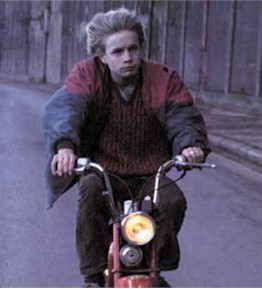

Contents | Features | Reviews | News | Archives | Store |
 |
|
| Movie Credits | Buy It! |
La Promesse
Review by Eddie Cockrell
Posted 27 June 1997
|  |
|
Directed by Luc and Jean-Pierre Dardenne Starring Jérémie Renier, Olivier
Gourmet, Screenplay by Luc and
Jean-Pierre Dardenne, |
In the economically ravaged industrial town of Seraing, on the banks of the Meuse river in French-speaking southern Belgium, a sordid story of illegal immigration, filial allegiance and moral bankruptcy yields a redemption of sorts in La Promesse (The Promise), a disarmingly raw but meticulously constructed new film from brothers Luc and Jean-Pierre Dardenne. A logical choice for moviegoers looking for intellectual nourishment among the blockbuster bonbons on offer from the Hollywood thrill factory this summer, the film is at once a tutorial on certain social dilemmas facing the new Europe and the engrossing emotional odyssey of a young boy who must summon the strength to make a right choice in a world where life has gone very wrong.
Fifteen-year-old Igor (Jérémie Renier) is first seen lifting a woman's wallet as he works on her car. While struggling to learn the mechanics trade, the good-looking but haunted teenager spends most of his time assisting his father Roger (Olivier Gourmet), an overweight, myopic, single-minded hustler who runs a squalid, government-sanctioned boarding house for illegal immigrants. Seemingly a veteran of every opportunity for graft and corruption his station offers, Igor is stunned when his father insists on covering up the accidental death of illegal African laborer Amidu Badolo (Rasmané Ouédraogo) -- who, before being entombed in the cement foundation of the house he'd been working on, exacted a promise from Igor to care for his wife (Assita Ouédraogo, no relation) and infant son.
From this moment on Igor is pulled in two directions, as the coarse, amoral but relatively stable life with father conflicts directly with his growing awareness that what they did was wrong. In the end, Igor fulfills his promise to Amidu after a fashion, but not without a seismic change in his own life that represents a step in the right direction but is no assurance of a bright future.
The Dardennes were born and raised in Seraing, and have made socially conscious Leftist documentaries on labor issues and films about Nazi resistance in Belgium from their base there since 1975. Their third feature (and first to get an American distributor), La Promesse displays not only their mastery of a verite style but their individual training as well; Jean-Pierre worked as a stand-up comedian and in experimental theater, while Luc took a degree in philosophy. A logical and successful blend of those disciplines in the service of dramatic social criticism, the film -- inspired by an exchange between Marcel and his mother in Dostoyevski's "The Brothers Karamazov" ("...everyone is guilty in everyone's eyes...") was planned with an exhaustive attention to detail that blended a verite style with meticulous preparation typified by the filmmakers' insistence that newcomer Renier and stage actor Gourmet live together for two weeks prior to filming. "We started with the fact that Igor thinks himself innocent -- that is, that he does bad things in total innocence," explain the siblings (who often speak of their work in a single voice). "We asked ourselves how he could be driven to feel guilty about what his father did, and about the entire milieu to which he belonged, to the point where he would tell the truth. We decided he would have to go all the way, in other words, he would have to say 'I'm guilty of everything.' This guilt allows him to escape his father."
Similarly, to emphasize both the isolation and strength of Amidu's wife Assita, the brothers separated the actress (who has appeared in numerous films directed by Idrissa Ouédraogo -- no relation -- in her native Burkina Faso) from the rest of the company. "She was cold all the time," remembers Luc, who saw her on stage during a trip to Africa. "She was not used to eating with utensils. It took her a long time to adapt, which was good for us, because the film also became a sort of documentary about a woman who arrives in Europe for the first time... She's a wonderful actress."
As good as Gourmet is as the conniving schemer Roger, whose idea of bonding is showering his son with such dubious gifts as an absurdly heavy gold ring and a homemade tattoo to match his own, the film revolves around the utterly convincing confusion of Renier's Igor. His is "at once the face of a child as well as that of an of an old man," enthuse the directors. "A lot passed across his face, instead of coming out in words. While we stayed pretty close to the script, Jérémie eliminated a lot of the dialogue himself. He brought silence to the film, which added tension. We liked that a lot." Perhaps the most impressive debut by a teenager since Juliette Lewis' stunning display of burgeoning sexuality in Martin Scorsese's remake of Cape Fear (sadly, she's since become a parody of herself), the young Renier shares with her an unstable mixture of child and adult that draws the viewer quickly and firmly into the drama.
Despite numerous situations that might have tempted filmmakers with less faith in their material, the Dardennes avoid explicit violence and sex: Amidu is heard falling but not seen, an evening of drinking in a pub with a woman presumably furnished by his father ("ever have it off?" he asks coarsely) ends abruptly without conclusion, and a sexual relationship between Igor and Assita suggested by one of the producers was immediately vetoed: "That's one of the reasons we didn't choose an older Igor," says Luc. "Otherwise, it would have been a story about telling the truth because of love, or because of lust. There is some sexual desire on Igor's part, but it's not the main thing. The main thing for us was not that he felt love, but that he felt indebted to [Assita}." For much the same reason, the absence of Igor's mother is never explained. "If there was a mother," they say, "she would either form a perverse couple with her husband, with the child as victim, or would tell Igor not to obey his father. In either case, we wouldn't have our stranger anymore...so as to leave mystery in the character."
These and other filmmaking tactics, including a detailed rationalization of the relationship between character and place that results in the enhancement of each by the other, makes La Promesse strongly reminiscent of the you-are-there immediacy of the postwar Italian Neo-Realist movement; that the father-son conflict of its most famous work, Vittoria De Sica's The Bicycle Thief, is updated and enhanced here is a direct link to the kind of social consciousness and positive rebellion reflected in the work of filmmakers and other artists who have strong bonds to their homelands but feel frustrated and ashamed by developments there.
While as individual strategies this approach may seem excessive, their cumulative effect is emotionally shattering, as Igor, teetering between adolescence and adulthood, is forced to make choices born of the extraordinary circumstances of his dilemma.
No fewer than six production companies participated in the creation of La Promesse, which is an indication of the unique challenges faced by filmmakers in smaller countries with smaller filmmaking communities. Yet socially responsible cinema is rarely better than this, and the poetic tawdriness of the surroundings only enhances the struggle for dignity and moral redemption in the face of larceny and despair. A movie of universal themes and shared humanity, La Promesse is that rare thing in any moviegoing season, much less the silly American summer: an intelligent, memorable, resonant experience.
Contents | Features | Reviews | News | Archives | Store
Copyright © 1999 by Nitrate Productions, Inc. All Rights Reserved.